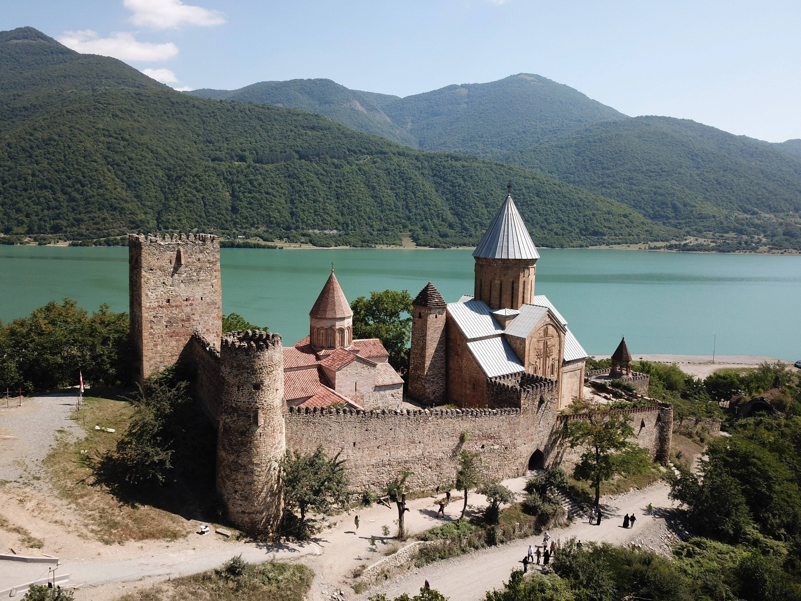

Sehenswürdigkeiten in Georgien
Die georgische Küche besticht durch ihre herzhaften und vielfältigen Aromen. Khachapuri, das mit Käse gefüllte Fladenbrot, gilt als Nationalgericht und ist bei Jung und Alt beliebt. Chinkali, große Teigtaschen mit Fleisch- oder Gemüsefüllung, werden in geselliger Runde serviert. Frisches Gemüse und Kräuter wie Koriander und Fenchel geben den Speisen ihr einzigartiges Aroma. Weinbau hat in Georgien eine 8000-jährige Tradition und Sorten wie Saperavi sind international bekannt. Fischgerichte vom Schwarzen Meer und regionale Hühnchenspezialitäten ergänzen die Speisekarte. Süße Desserts mit Honig und Nüssen runden ein georgisches Mahl ab. Die Vielfalt der Gerichte spiegelt die unterschiedlichen Klimazonen und Böden des Landes wider.
